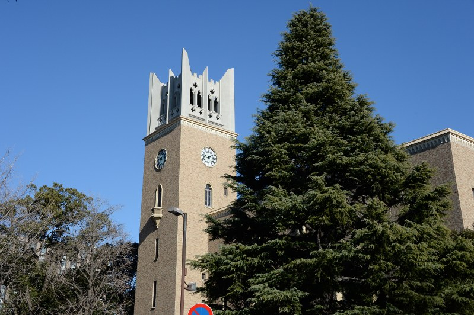
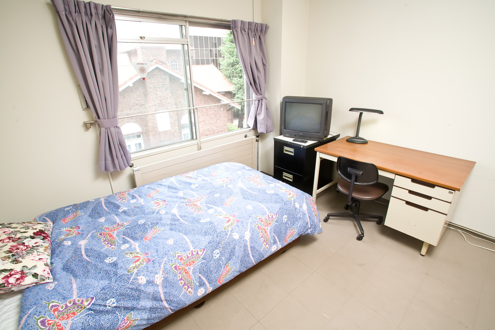
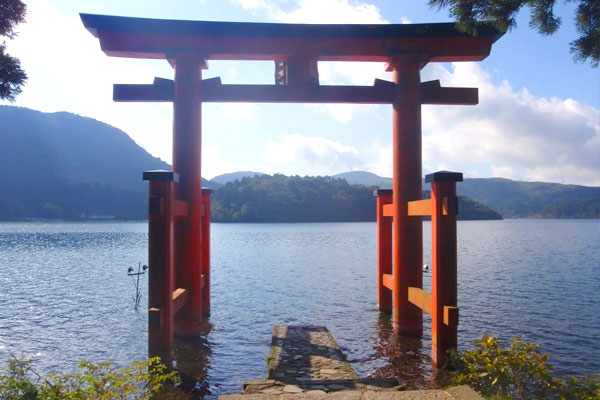
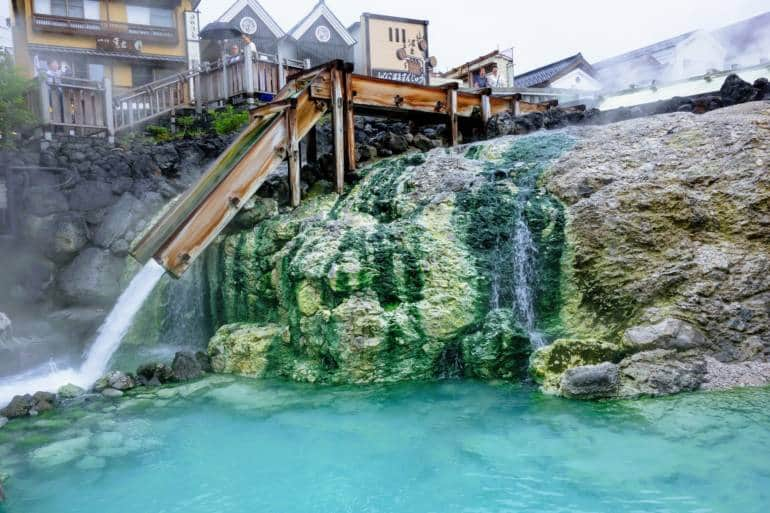
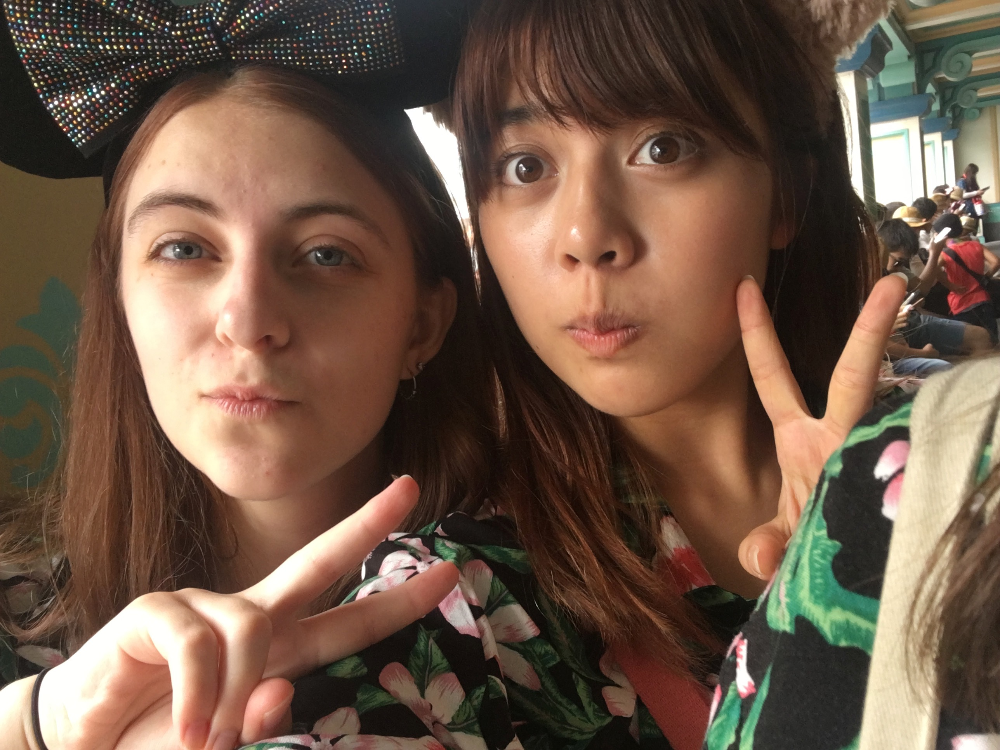

My Study Abroad Experience
During my junior year of college, I studied abroad for a year at Waseda University in Tokyo, Japan. I can easily say that going abroad in a whole new country was one of the most rewarding experiences of my time in college so far. Scroll down or click the icons below to see some of my adventures!
Waseda University
 Founded in 1882, Waseda University is located in the heart of Tokyo, Japan (only about a 15 min train ride from Shinjuku)! Many famous and notable alumni have attended the university, such as figure skater Yuzuru Hanyu and author Haruki Murakami. During my stay, I stayed at the Waseda International Student House, a dorm for international students all around the world.
Travel
 During my stay, I had the opportunity to travel to many different areas of Japan such as Hakone and Kusatsu. Japan is known for its vibrant seasons, so wherever and no matter what time of the year you decide to travel you will not be disappointed. My favorite way of traveling is by riding the Japanese bullet train, the shinkansen!
Fun

Some of my fondest memories of my study abroad are doing daily everyday activities, such as getting lunch from the convenience store with my friends or riding the train. Being able to immerse myself in such a different culture and environemnt than I was used to was both a scary and exciting experience.